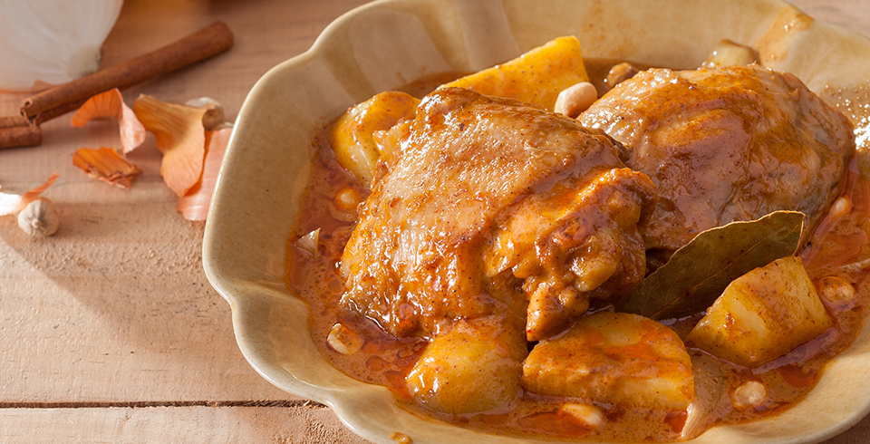

Massaman Curry
Massaman Curry is common amongst Thai people in all regions, as well as foreigners. This type of paste has ingredients of a variety of spices and is suitable for Massaman Curry dishes. If used in a curry, the broth will turn into a pleasant red-brown color with a rich flavor and the aroma of the spices, including cumin, coriander seed, star anise, and cinnamon. In addition, this type of paste can be used to lessen the smell of all types of meat.
Ingredients
Green Curry
- 1/2 to 1 pound chicken pieces or chopped chicken breast/thigh
- 1 to 2 medium potatoes, cut into chunks
- 1 (14-ounce)/400 ml can coconut milk (not lite)
- 1 small red bell pepper, thinly sliced
- 1 medium tomato, sliced
- 2 tablespoons coconut oil OR vegetable oil
- 1/3 cup onion, sliced
- 1 thumb-piece ginger, grated
- 4-5 cloves garlic
- 1 red chili, sliced, OR 1/2 to 3/4 tsp. chili flakes/cayenne pepper
- 1/2 cup good-tasting chicken stock
- 3 bay leaves
- 1 teaspoon turmeric
- 1/4 cup chopped unsalted dry-roasted cashews (+ handful more to finish)
- 1 teaspoon ground coriander
- 1 teaspoon whole cumin seed
- 1/8 teaspoon cardamon
- 1 teaspoon tamarind, or substitute 1 Tbsp. lime juice*
- 3/4 teaspoon shrimp paste OR 1 additional Tbsp. fish sauce
- tablespoons fish sauce
- 2 tablespoons fish sauce
- 1 tablespoon palm sugar OR brown sugar
- 1 stalk of lemongrass, minced, OR 2-3 Tbsp. frozen/bottled prepared lemongrass
Recipe Instructions
- Heat a wok, large frying pan, or soup-type pot over medium-high heat. Drizzle in the oil and swirl around, then add the onion, ginger, garlic, and chili. Stir-fry 1-2 minutes to release the fragrance.
- Add the stock plus the following: lemongrass, bay leaves, turmeric, chopped cashews, ground coriander, whole cumin seed, cardamom, tamarind (or lime juice), shrimp paste, fish sauce, and sugar. Stir with each addition and bring to a light boil.
- Add the chicken, stirring to coat with the spicy liquid, then add the coconut milk and potatoes. Stir and bring back up to a boil. Reduce heat to low, or just until you get a good simmer.
- Simmer 30 to 40 minutes, stirring occasionally, until chicken and potatoes are tender. Add red pepper and tomato during the last 10-15 minutes of cooking time. If you prefer a more liquid curry sauce, cover while simmering. If you prefer a thicker curry sauce, leave off the lid.
- Taste-test the curry, adding more fish sauce for increased flavor/saltiness, or more chili if you want it spicier. If too sour, add a little more sugar. If too salty or sweet for your taste, add a touch more tamarind or lime juice. If too spicy, add more coconut milk.
- Add a handful more cashews and fold in. Transfer to a serving bowl, or plate up on individual plates or bowls. Top with fresh coriander, if desired, and serve with Thai jasmine rice.

All Rights Reserved